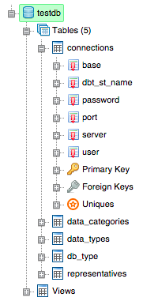

|
aimaraJS (Github) is a pure javascript TreeView component created as a response to other components that did not satisfy my project requirements.
The main objective of this component is to be able to dinamically add and remove nodes from the tree as fast as possible and also to offer
features to interact with the tree, such as:
|
|
ASP.NET application provides an user friendly interface to manipulate databases of different technologies (currently supporting Oracle, PostgreSQL, MySQL and Firebird). It provides features to work with single bases, such as treeview visualization of database structures, detailed graph visualization of table relationships, statistics chart, and also to work with pairs of bases, such as databases comparison and structures and data migration.
The application offers a tool to compare tables structures contained in two different databases. It searches for differences between tables fields and fields details. The results are displayed on charts and on a table.
This is the main feature of this application. It replicates all table structures (including constraints) and data between two different databases. These bases can belong to any technology.
|  |
Treeview visualization of main database structures using aimaraJS component. Supported structures:
|
Relationships between all tables can be seen in a graph where nodes represent tables and edges their relationships. Nodes are colored according to the amount of records stored in that table, creating a color scale.
Bar chart providing information about number of records stored in all tables of the current database.
Text area with SQL syntax highlighting to execute queries. The results are displayed on an interactive Excel like table.